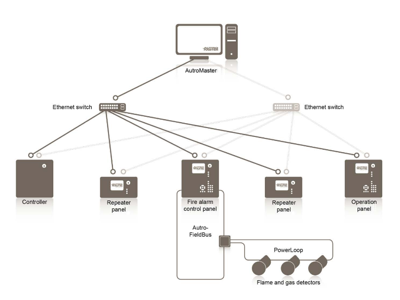

na backendzie
Tomasz Dołbniak
4developers offline
Gdańsk 2019

 nGraph
nGraph
 ONNX
ONNX
tomasz-dolbniak tomdol
O czym to będzie?
Doświadczenia
Narzędzia
Abstrakcje
Materiały
Jak się robi backend?
W WERSJI MINIMALNEJ
w czystym C++
Model OSI - warstwa IV
Sockety
Backend na socketach
int server_socket = socket(AF_INET, SOCK_STREAM, 0);
sockaddr addr = { /* IP + port */ };
bind(server_socket, &addr);
listen(server_socket);
while(true) {
int connection_socket = accept(server_socket, &addr);
char buffer[1024] = {0};
read(connection_socket, buffer, 1024);
write(connection_socket, "Hello world", 11);
}API niskiego poziomu
int socket(int domain, int type, int protocol);
read(int fd, void *buf, size_t count);
write(int fd, const void *buf, size_t count);
meh
HTTP
- Protokół tekstowy
- Model OSI - warstwa VII
- HTTP nie definiuje sposobu przesyłania wiadomości
- HTTP zakłada istnienie warstwy transportowej: "underlying & reliable"
- HTTP bazuje na TCP (warstwa IV modelu OSI)
Request HTTP
POST /login HTTP/1.1
Host: google.com
User-Agent: Mozilla/5.0 Gecko/20100101 Firefox/70.0
Accept: text/html
Accept-Language: en-US,en;q=0.5
Content-Length: 37
{
login: "admin",
password: "admin"
}
Backend na bazie HTTP
std::string request = "POST /login HTTP/1.1\nHost: (...)";
write(socket, request.c_str(), request.length());
REST
"Architectural style"
Bazuje na HTTP
Wymiana JSONów po HTTP
REST vs RESTful
Typowe narzędzia do backendów REST
- Java
- C# + .NET
- Python + Django
- node.js
Asynchroniczność
W samym języku dopiero od C++11
Wciąż brak
std::async()std::futurestd::promiseWciąż brak
.then().then().then()Asynchroniczność
Request parse_request(std::string);
std::vector<Book> get_books_from_db(Request);
Response build_response(std::vector<Book>);
void LibraryServer::send_response(Response);
void BooksHandler::get(std::string req) {
std::async(parse_request)
.then(get_books_from_db)
.then(build_response)
.then(&LibraryServer::send_response);
}Asynchroniczność
Image ImagesHandler::get_book_cover(size_t id);
void ImagesHandler::get_book_covers(std::vector<Book> books) {
std::vector<std::future<Image>> covers;
for(const auto& book : books) {
covers.push_back(std::async(get_book_cover, book.id()));
}
auto all_images_loaded = std::when_all(covers.begin(),
covers.end());
all_images_loaded.then([&]() { send_images(covers); });
}C++20
en.cppreference.com/w/cpp/experimental/concurrencymodernescpp.com/index.php/coroutines
code::dive 2019
channel/UCU0Rt8VHO5-YNQXwIjkf-1g
channel/UCU0Rt8VHO5-YNQXwIjkf-1g
Boost.Asio
- Async network & low level I/O
- Asynchroniczność na jednym wątku => proactor
- Można podpiąć pulę wątków - skalowalność
- Obsługa coroutines
- TCP, SSL, timery, porty szeregowe
Boost.Asio
Kluczowe elementy
- Wzorzec proactor
- asio::io_service
- asio::io_service::strand
- buffers
- std::shared_ptr
JSON
nlohmann/jsonTencent/rapidjson
72ms vs 8ms
nlohmann/json
json obj = {
{"pi", 3.141},
{"happy", true},
{"name", "Niels"},
{"nothing", nullptr},
{"answer", {
{"everything", 42}
}},
{"list", {1, 0, 2}},
{"object", {
{"curr", "USD"},
{"value", 42.99}
}}
};
auto j = json::parse("{...}");
std::string s = j.dump();
std::cout << j.dump(4) << std::endl;
std::ifstream i("in.json");
i >> j;
std::ofstream o("out.json");
o << j;
RapidJSON
const char* json = "{...}";
Document d;
d.Parse(json);
Value& s = d["stars"];
s.SetInt(s.GetInt() + 1);
StringBuffer buffer;
Writer<StringBuffer> writer(buffer);
d.Accept(writer);
std::cout << buffer.GetString() << std::endl;Boost.Beast
boostorg/beastVinnie Falco
Boost.Beast
- HTTP protocol level library
- Bazuje na Boost.Asio
- Abstrakcja protokołu HTTP - typy/klasy
- message, headers, body(string_body, file_body, vector_body, ...), request, response, strumienie, bufory
- Biblioteka helperów - read, write, parse, ...
- WebSockets
www.boost.org/doc/libs/develop/libs/beast/doc/html
Klient
http::request<empty_body> req;
req.version(11); // HTTP/1.1
req.method(verb::get);
req.target("/index.html");
req.set(field::accept, "text/html");
req.set(field::user_agent, "Beast");
http::write(socket, req);Serwer
response<string_body> res;
res.version(11); // HTTP/1.1
res.result(status::ok);
res.set(field::server, "Beast");
res.body() = "Hello, world!";
res.prepare_payload();
http::async_write(socket, res, done_callback);Boost.Beast - minusy
- Cały backend trzeba napisać samemu
- Trzeba samemu obsługiwać połączenia i requesty
- Trzeba posługiwać się socketami - listen, accept, read, write
- Trzeba samemu zadbać o load balancing
- Trzeba bardzo dbać o "lifetime" obiektów
www.boost.org/doc/libs/develop/libs/beast/example/http/server/small/http_server_small.cpp
Wyższy poziom w C++
- Stiffstream/restinio
- oktal/pistache
- microsoft/cpprestsdk
- ipkn/crow
- splunk/pion (porzucony)
Ficzery wyższego poziomu
- Łatwe uruchomienie i konfiguracja serwera (wątki, timeouty, ...)
- Rozbudowany router
- Łatwa praca z nagłówkami HTTP
- Serwowanie statycznych plików
- Obsługa upload'u plików
- Obsługa HTTPS i kompresji (gzip, deflate)
restinio - router
restinio::router::express_router_t<> router{};
router.http_get("/books/:book_id", book_handler);
router.http_get("/book_covers/:book_id",
CoversHandler{'/path/to/images'});
router.http_get(R"(/hashtags/:tag([a-z0-9]+)", cb);
router.non_matched_request_handler(handler_404);
restinio - router
using namespace restinio;
router::express_router_t<> router{};
router.http_get("/books/:book_id", [](auto req, auto params) {
const auto book_id = cast_to<size_t>(params["book_id"]);
const auto book_json = db.get_book(book_id);
return init_resp(req->create_response())
.set_body(book_json.dump())
.done();
});restinio - serwer
restinio::run(
restinio::on_this_thread<traits_t>()
.address("localhost")
.request_handler(router)
.read_next_http_message_timelimit(10s)
.write_http_response_timelimit(1s)
.handle_request_timeout(1s)
);restinio - serwer wielowątkowy
restinio::run(
restinio::on_thread_pool<traits_t>(8)
.address("localhost")
.request_handler(router)
.read_next_http_message_timelimit(10s)
.write_http_response_timelimit(1s)
.handle_request_timeout(1s)
);restinio - linki
stiffstream.com/en/products/restinio.htmlgithub.com/Stiffstream/restinio
bitbucket.org/sobjectizerteam/restinio/src/default/dev/sample/
Gotowy serwer

LIGHTTPD

CGI
- Wielojęzykowy protokół
- HTTP, routing, SSL - w serwerze
- Aplikacje konsolowe / skrypty
- stdin + stdout
- nagłówki i ścieżka -> zmienne środowiskowe
- 1 zapytanie -> 1 proces
FastCGI
- Procesy - workery
- Dużo lżejsze niż CGI
- API w stylu C
- Przypomina backend na socketach
Środowisko Embedded
ARM @ 400MHz + 64MB RAM + karta SD
C++ w chmurze
C++ AWS SDK
- Od listopada 2018
- Bardzo szybkie lambdy (serverless)
- C++ API do DynamoDB
- Wysyłanie emaili i SMS z C++
- Obsługa plików w S3
- Zarządzanie instancjami EC2
- aws/aws-sdk-cpp
- AWS SDK for C++ (fm4Aa3Whwos)
- CppCast: AWS Lambda with Marco Magdy
AWS Lambda w C++
awslabs/aws-lambda-cpp- Boilerplate
- Przykłady
- Buildsystem & deployment
- Testy
AWS Lambda w C++
#include <aws/lambda-runtime/runtime.h>
using handler_t =
std::function<invocation_response(const invocation_request&)>;
int main()
{
run_handler(/* handler_t handler */);
return 0;
}
AWS Lambda handler
#include <aws/lambda-runtime/runtime.h>
using namespace aws::lambda_runtime;
invocation_response
lambda_request_handler(const invocation_request& req)
{
// req.payload -> std::string
if (req.payload.empty())
return invocation_response::failure("empty request",
"error_type");
else
return invocation_response::success("{ ... JSON ... }",
"application/json");
}
AWS Lambda - deployment
$ make aws-lambda-package-demo
$ aws lambda create-function --function-name demo \
--role <role ARN> --runtime provided --timeout 15 \
--memory-size 128 --handler demo --zip-file fileb://demo.zip
$ aws lambda invoke --function-name demo \
--payload '{"answer": 42}' output.txt
Wnioski
- Nie pisać backendu w C++ (od zera i w całości)
- Dokładnie określić wymagania
- Zrobić proof of concept
- Zmierzyć
- Dopiero wtedy decydować
Kiedy rozważyć C++?
- Wydajność
- Zużycie pamięci
- Rozmiar aplikacji
- Platforma
- Dostęp do sterowników, bibliotek, sytemu...
Mieć ciastko i zjeść ciastko?
- C++ bindings
- "Wystawić" kod C++ do innego języka
- Obsłużyć "Critical path" w C++
- node.js -> N-API
- Java -> JNI
- Python -> pybind11
Przykłady backendów w C++
openbmc/bmcweb - crow + Boost.Beast
intel/intelRSD - microhttpd
Nie tylko REST
WebSockets
Kiedy i po co?
- Full duplex
- Low latency
- Realtime apps
- Persistent connection
agar.io
 news.ycombinator.com/item?id=9462967
news.ycombinator.com/item?id=9462967
uWS
uNetworking/uWebSockets
Protocol Buffers
Protocol buffers are a flexible, efficient, automated mechanism for serializing structured data – think XML, but smaller, faster, and simpler.https://developers.google.com/protocol-buffers/docs/overview
Protobuf message
message Person {
required string name = 1;
required int32 id = 2;
optional string email = 3;
}.proto -> C++
protoc person.proto --cpp_out=...
Person kowalski;
std::ifstream input("zapisany_kowalski.bin", std::ios::binary);
kowalski.ParseFromIstream(&input);
std::cout << kowalski.email();
kowalski.set_id(5);
std::ofstream out("kowalski_the_5th.bin", std::ios::binary);
kowalski.SerializeToOstream(&out);
rozmiar nawet 10x mniejszy niż formaty tekstowe
parsowanie nawet 100x szybciej
protobuf + gRPC
message Person {
required string name = 1;
required int32 id = 2;
optional string email = 3;
}
message Request {
required int32 id = 1;
}
service People {
rpc GetPerson (Request) returns (Person) {}
}
Komunikacja gRPC

OpenVINO™
IntelAI/OpenVINO-model-serverAPI gRPC
Implementacja w pythonie
Protobuf vs JSON
 https://auth0.com/blog/beating-json-performance-with-protobuf
https://auth0.com/blog/beating-json-performance-with-protobuf